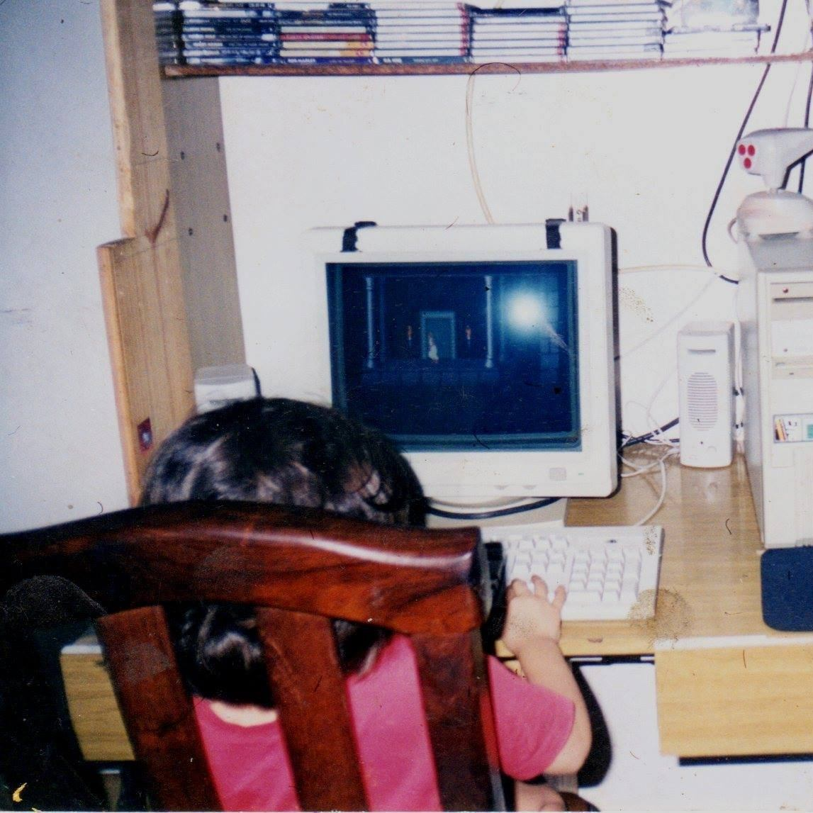

Soy profesora de Matemática (FaMAF, UNC), lo cual me da una base linda de pensamiento lógico y lenguaje. Si bien cursé la etapa de #yoprogramo, sólo pude concentrarme en el front-end del proyecto usando un poco de bootstrap y css. Sentí que aprendí todo desordenado, por lo cual me viene bien arrancar paso a paso en este curso.
